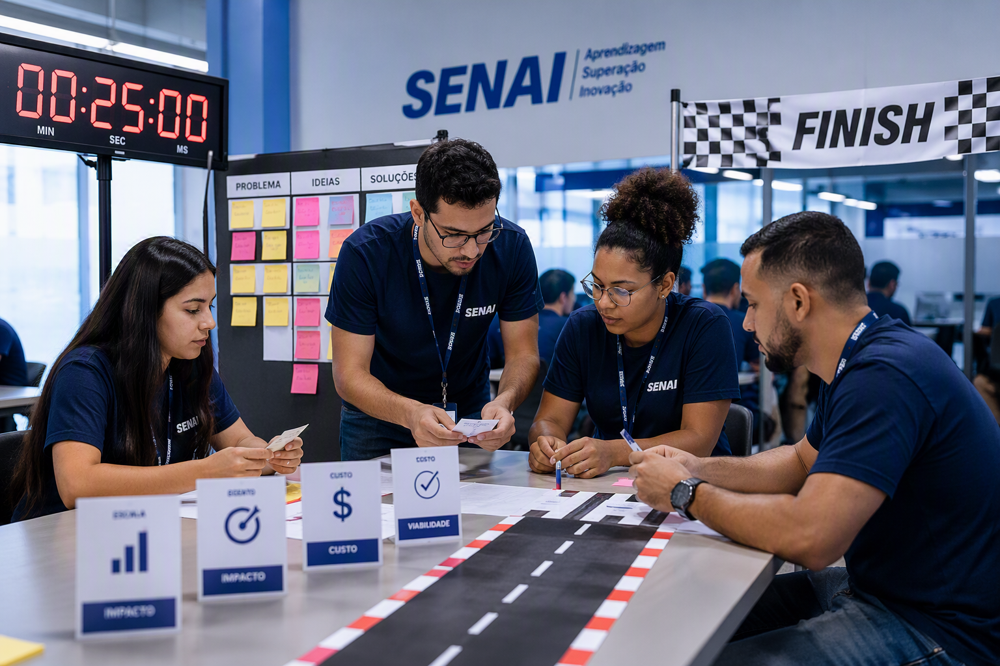

SAGA SENAI DE INOVAÇÃO
A história que nos trouxe até aqui
Capítulo I — antes de falar da nova estrutura, precisamos entender o problema que exigiu a Saga.
A Saga SENAI de Inovação não nasceu pronta. Ela surge da combinação entre desafios reais, decisões pedagógicas, experiências com estudantes, participação da indústria e evolução institucional.
Desafio de origem
A escola precisava ampliar experiências em que o aluno interpretasse problemas reais e não apenas reproduzisse conteúdos.
Resposta pedagógica
A Saga organiza experiências aplicadas com equipe, protótipo, tempo, banca e aprendizagem evidenciada.
Resultado institucional
O percurso evolui de evento mobilizador para jornada estruturada de inovação, currículo e indústria.
Esta não é uma palestra sobre passado.
É uma leitura estratégica da trajetória que tornou a próxima mudança necessária.
Nesta abertura, organizamos a narrativa em quatro movimentos para explicar por que a Saga precisou surgir e como o Grand Prix se tornou a primeira resposta.
Problema inicial
Que lacuna pedagógica e institucional exigiu uma nova experiência formativa?
DSPI, SENAI Lab e Inova
Como a metodologia amadurece, ganha infraestrutura e se conecta à pergunta de valor.
Grand Prix
Como surge a primeira grande resposta: escuderia, tempo curto, protótipo e banca.
Nova arquitetura
Por que a evolução para 2026 organiza uma trajetória que funcionou.
Que tipo de profissional a indústria passou a exigir?
A indústria passou a demandar profissionais capazes de interpretar problemas, colaborar com diferentes áreas, testar hipóteses, prototipar soluções, comunicar decisões e aprender continuamente.
Interpretar
Ler contexto, restrições e necessidades antes de agir.
Colaborar
Atuar em equipe, integrar papéis e construir resposta coletiva.
Testar
Experimentar hipóteses, validar caminhos e ajustar rapidamente.
Prototipar
Tirar a ideia do discurso e materializá-la em solução visível.
Comunicar
Defender decisões com clareza diante de banca, empresa e docentes.
Aprender continuamente
Atualizar repertório em um mundo do trabalho que muda com velocidade.
A escola precisava se aproximar da indústria real.
A sala de aula sempre foi o espaço central da formação. O desafio estava em ampliar situações em que o aluno enfrentasse problemas reais, pressão, prototipagem e defesa pública.
O que a escola já fazia bem
- Domínio técnico e orientação docente.
- Organização curricular e avaliação interna.
- Formação consistente em bases profissionais.
O que precisava ser ampliado
- Enfrentamento de problemas reais e abertos.
- Relação mais direta com empresas e usuários.
- Protótipo, pitch, banca externa e tomada de decisão sob pressão.
Lacuna que exigiu a Saga
Conectar o que a escola já fazia muito bem a uma experiência mais aplicada, integrada e visível para o mundo do trabalho.
O problema real virou matéria-prima de aprendizagem.
A lógica da Saga é simples e poderosa: transformar demandas reais da indústria em experiências formativas com contexto, restrições, usuários, prazo e defesa pública.
Demanda real
A indústria traz um problema que importa.
Situação-problema
O desafio é traduzido em experiência formativa.
Equipe
Estudantes se organizam para investigar e propor.
Protótipo
A solução começa a ganhar forma concreta.
Pitch
A ideia é defendida com clareza e evidências.
Aprendizagem evidenciada
Competências aparecem no processo e na entrega.
A Saga não acontece fora da metodologia.
Ela materializa a MSEP.
A Saga traduz princípios da Metodologia SENAI de Educação Profissional em experiências concretas: protagonismo do estudante, situação desafiadora, docente mediador, desenvolvimento de competências e aproximação com o mundo do trabalho.
Protagonismo
O estudante age, decide, constrói e apresenta.
Situação desafiadora
O problema real organiza a aprendizagem.
Docente mediador
O professor orienta, provoca e sustenta o processo.
Competências
O percurso integra saber técnico, relacional e cognitivo.
Mundo do trabalho
A aprendizagem se ancora em demandas, critérios e repertórios reais.
Relação direta com a MSEP
A Saga não é um apêndice do currículo. Ela é uma forma de fazer o currículo aparecer em movimento.
Sem demanda real, não há Saga de verdade.
A essência da Saga está na conexão entre escola, estudante e indústria em torno de um problema que importa.
Escola
Organiza a experiência, media o processo e transforma o desafio em aprendizagem.
Estudante
Investiga, cria, prototipa, comunica e aprende em equipe.
Indústria
Traz contexto, provoca, orienta e valida o valor da solução.
Centro da experiência
Problema real + equipe + entrega pública = aprendizagem aplicada com sentido.
A Saga é uma jornada, não uma lista de eventos.
A trajetória pode ser compreendida como um mapa de amadurecimento: primeiro a faísca, depois o método, depois a materialização e, por fim, a pergunta sobre valor e continuidade.
Grand Prix
Ativa criatividade, equipe, tempo curto e resposta rápida.
DSPI / Integra
Dá método, continuidade e amadurecimento pedagógico.
SENAI Lab
Oferece infraestrutura para experimentar e materializar.
Inova
Provoca valor, aplicação, viabilidade e mercado.
Nova Saga 2026
Organiza a trajetória com mais governança, clareza e integração.
Mapa da jornada
É esse percurso que organiza a narrativa: da necessidade inicial até a primeira grande resposta, o Grand Prix.

Grand Prix: a primeira grande aposta.
O Grand Prix nasce como uma experiência de alta intensidade: desafio real, escuderia multidisciplinar, prazo curto, mentoria, protótipo e defesa pública diante de banca.
Desafio real
O problema parte de uma demanda concreta e gera sentido imediato para a equipe.
Escuderia
Os estudantes se organizam em papéis complementares para entregar juntos.
Entrega pública
O processo termina em pitch, banca e aprendizagem aplicada sob pressão real.
Por que escuderia — e não apenas equipe?
Escuderia comunica uma lógica de atuação: papéis definidos, colaboração intensa, estratégia, velocidade e performance coletiva.
Estratégia
Lê o desafio, ajuda a priorizar e organiza o caminho da entrega.
Desenvolvimento
Transforma ideias em solução técnica, protótipo ou experimento funcional.
Comunicação
Estrutura narrativa, registra decisões e prepara o pitch com clareza.
Integração
Conecta os esforços individuais para que a entrega faça sentido como conjunto.
Aprendizagem em escuderia
Cada integrante contribui para o avanço do grupo. A aprendizagem acontece na relação entre pressão, colaboração e entrega.
Pouco tempo. Muito aprendizado.
No Grand Prix, o tempo deixa de ser apenas uma restrição logística e passa a funcionar como recurso pedagógico.
Imersão
Compreender o problema e alinhar leitura de contexto.
Ideação
Gerar alternativas, escolher caminhos e distribuir papéis.
Prototipagem
Materializar a solução possível dentro do prazo.
Pitch / banca
Defender a proposta com síntese, lógica e evidências.
Decisão rápida
O prazo curto obriga a priorizar o que realmente gera valor.
Coordenação
A equipe precisa sincronizar papéis, ideias e entregas em ritmo intenso.
Comunicação objetiva
O grupo aprende a sintetizar, negociar e defender escolhas.
O Grand Prix não termina em ideia.
A ideia precisa ganhar forma, lógica e defesa. Por isso, o Grand Prix articula três entregas centrais: Canvas, protótipo e pitch.
Canvas
Organiza problema, proposta de valor, público, solução e lógica do projeto.
Protótipo
Faz a ideia começar a existir em algo visível, testável ou demonstrável.
Pitch
Obriga a equipe a defender a solução com clareza diante de banca externa.
Canvas
Organiza valor e sentido.
Protótipo
Transforma discurso em evidência.
Pitch
Traduz conhecimento em argumento convincente.
A indústria não é espectadora.
Na Saga, a empresa não aparece apenas no fim. Ela participa do processo e muda a natureza da experiência formativa.
Demandante
Traz o problema, o contexto e a relevância da situação a ser enfrentada.
Mentora
Orienta a equipe, provoca olhar de realidade e ajuda a amadurecer a proposta.
Provocadora
Faz perguntas difíceis e eleva o nível de análise, valor e viabilidade.
Avaliadora
Observa a solução como alguém que representa critérios do mundo do trabalho.
Efeito pedagógico
A solução deixa de ser apenas resposta escolar e passa a ser uma proposta construída diante de uma necessidade concreta.
A faísca acendeu.
A experiência revelou que estudantes técnicos podiam ir além da execução: compreender problemas, colaborar, construir protótipos e comunicar soluções.
Compreender o desafio
Os alunos demonstraram leitura de contexto e capacidade de interpretar problemas reais.
Colaborar com intensidade
A escuderia mostrou força na divisão de papéis, negociação e integração de ideias.
Entregar sob pressão
Mesmo em tempo curto, as equipes conseguiram prototipar e defender publicamente soluções.
Quando a experiência deixou de ser pontual.
Com o avanço das edições, o Grand Prix demonstrou capacidade de mobilização em escala, envolvendo estudantes, docentes, mentores, avaliadores, empresas e Departamentos Regionais.
Capilaridade
A metodologia começou a circular por diferentes escolas, áreas e contextos de formação.
Mobilização
Mais atores passaram a participar do processo, fortalecendo a experiência como rede.
Visibilidade
O projeto ganhou reconhecimento institucional e mostrou força para crescer.
Escala como evidência
Quando a metodologia se espalha, fica claro que ela não depende de um único lugar: ela pode ser compreendida, adaptada e executada.

A trajetória ganhou nomes, equipes e resultados.
O pódio deu visibilidade à aprendizagem, mas o valor maior esteve na mobilização: cada escuderia viveu protagonismo, criação e defesa pública.
Reconhecimento
Resultados ajudam a tornar visível a qualidade das entregas e das equipes.
Protagonismo
O grande ganho é o estudante assumir papel ativo, autoral e público no processo.
Repertório
Mesmo sem pódio, cada equipe sai com repertório, visibilidade e experiência aplicada.
O que o resultado realmente mostra
O pódio dá rosto à jornada, mas a metodologia se fortalece pela quantidade de equipes mobilizadas e pela qualidade das aprendizagens geradas.
A escala confirmou a força da metodologia.
Quando o Grand Prix alcançou dimensão nacional e latino-americana, ficou evidente que a proposta tinha força para ser compreendida, adaptada e executada em diferentes contextos.
Adaptabilidade
A lógica do desafio, da escuderia e da entrega pública funciona em realidades diferentes.
Legitimidade
A expansão mostra que a metodologia passou a ser compreendida como valor institucional e sistêmico.
Projeção regional
América Latina 2024 simboliza a capacidade da experiência de atravessar fronteiras.
Leitura estratégica
- O Grand Prix deixa de ser evento isolado e passa a operar como modelo replicável.
- A escala comprova potência pedagógica, mobilização e capacidade de adaptação.
- Esse resultado abre caminho para o amadurecimento posterior da Saga.
Uma boa ideia consegue amadurecer?
Depois do Grand Prix, a pergunta deixou de ser apenas “os estudantes conseguem criar sob pressão?”. A nova questão passou a ser: a ideia consegue ser investigada, estruturada, testada e defendida em maior profundidade?
Grand Prix: faísca
Ativa criatividade, resposta rápida, colaboração intensa e primeira materialização da ideia.
DSPI / Integra: método
Amplia o tempo, organiza a investigação e transforma a proposta em percurso pedagógico.
Investigar
Entender problema, público, contexto e evidências.
Estruturar
Organizar objetivos, entregas, papéis e critérios.
Defender
Sustentar decisões com processo, protótipo e aprendizagem.
Se o Grand Prix acende a faísca, o DSPI sustenta a chama.
O DSPI ampliou o tempo da experiência e aproximou a inovação do Projeto Integrador e da prática pedagógica regular.
Pesquisa
A equipe sai da opinião e busca dados, referências, usuários e contexto.
Organização
A ideia ganha plano, escopo, critérios, papéis e documentação.
Desenvolvimento
A proposta evolui em ciclos de construção, teste e ajuste.
Apresentação
O grupo defende percurso, evidências, solução e aprendizagem.
Do evento ao percurso
O tempo maior permite profundidade: a inovação deixa de ser só resposta rápida e passa a ser processo acompanhado.
O processo também é aprendizagem.
No DSPI/Integra, a profundidade está no caminho: investigar, entrevistar, errar, ajustar, registrar e defender decisões têm valor pedagógico.
Investigar
Coletar informações, escutar usuários e compreender o problema.
Experimentar
Testar hipóteses, construir versões e aprender com erros.
Ajustar
Refinar solução, escopo e comunicação com base em feedback.
Registrar
Transformar processo em evidência para avaliação e aprendizagem.
Autonomia
O estudante assume decisões e responde pelo percurso.
Pensamento crítico
A equipe precisa justificar escolhas e rever caminhos.
Resiliência
O erro vira insumo de melhoria, não fim do processo.
A inovação entrou na rotina pedagógica.
Ao se conectar ao Projeto Integrador, a Saga deixou de ser apenas evento e passou a dialogar com o planejamento da escola.
Planejamento
O desafio real passa a orientar conteúdos, competências e entregas.
Mediação docente
O professor acompanha o processo, provoca perguntas e orienta decisões.
Evidências
Registros, testes, protótipos e apresentações mostram aprendizagem.
Integração curricular
Saberes técnicos, comunicação e colaboração se conectam em uma mesma entrega.
Avaliação
O foco se desloca do produto isolado para produto, processo e competência.
Indústria
O projeto ganha conexão com necessidade real, contexto e critérios externos.
Dois tempos. Duas funções. Uma mesma jornada.
Grand Prix e DSPI/Integra não competem entre si. Eles se complementam em uma trilha formativa progressiva.
Grand Prix
- Intensidade e criatividade sob pressão.
- Primeira resposta ao desafio real.
- Mobilização rápida de equipe, protótipo e pitch.
DSPI / Integra
- Continuidade, pesquisa e validação.
- Conexão com Projeto Integrador e rotina pedagógica.
- Amadurecimento técnico, documental e formativo.
Mesma jornada
A faísca abre possibilidades; o método sustenta a evolução da solução e da aprendizagem.
A inovação precisa de chão.
Toda jornada de inovação precisa de espaço para experimentar. O SENAI Lab é o ambiente em que ideias ganham forma e erros viram aprendizagem.
Experimentar
Testar hipóteses, materiais, tecnologias e abordagens.
Prototipar
Transformar ideia em artefato, demonstração ou prova de conceito.
Aprender com erro
Usar falhas como evidências para melhoria e tomada de decisão.
SENAI Lab
Camada prática da jornada: conecta criatividade, técnica, teste e materialização.
O SENAI Lab não é uma etapa. É uma infraestrutura da jornada.
O SENAI Lab apoia a prototipagem rápida, sustenta a evolução funcional e prepara projetos para demonstrar valor, uso e aplicação.
Camada transversal
O laboratório atravessa Grand Prix, DSPI/Integra e Inova, dando infraestrutura à experimentação.
Grand Prix
Prototipagem rápida para comunicar a primeira solução.
DSPI / Integra
Evolução do protótipo funcional com testes e registros.
Inova SENAI
Demonstração de valor, aplicabilidade e potencial de continuidade.
Aprendizagem
Transformação de ideias, erros e evidências em competências.
A solução amadurece por níveis.
A profundidade não acontece de uma vez. A equipe passa por níveis de amadurecimento, cada um com entregas e evidências próprias.
Representação
A ideia é explicada por mapa, esboço, modelo simples ou simulação inicial.
Funcionalidade
A equipe testa partes essenciais da solução e valida hipóteses.
Aplicação
A solução se aproxima de uso real, com usuário, contexto, evidências e critérios.
Teste
Verificar o que funciona.
Feedback
Escutar usuário, docente, mentor e banca.
Ajuste
Melhorar decisão, protótipo e comunicação.
Documentação
Registrar evidências e evolução.
A Saga começou a organizar cultura, método e evidência.
Com DSPI/Integra e SENAI Lab, a Saga fortalece governança pedagógica: mais clareza de entregas, evidências, protagonismo docente e conexão com indústria.
AAluno
Vive processo mais profundo, registra aprendizagem e desenvolve autonomia.
DDocente
Ganha roteiro, evidências e mediação mais estruturada do projeto.
EEscola
Organiza currículo, Projeto Integrador, laboratório e conexão com parceiros.
IIndústria
Enxerga aproximação com problemas reais e formação mais aderente ao trabalho.
MMétodo
Transforma criatividade em processo pedagógico acompanhado.
VEvidência
Mostra percurso, decisões, protótipo, teste, aprendizagem e defesa.
Alguém usaria, apoiaria ou pagaria por isso?
O Inova SENAI leva a solução para uma conversa mais próxima do mercado. A pergunta deixa de ser apenas “a ideia é boa?” e passa a tratar de valor.
Usaria?
A solução resolve uma dor real para um usuário identificável?
Apoiaria?
Há parceiros, mentores, escola ou indústria dispostos a fortalecer a continuidade?
Pagaria?
Existe percepção de valor, viabilidade e possibilidade de aplicação no mercado?
Pergunta de valor
O Inova provoca a equipe a sair da ideia interessante para uma proposta defensável, aplicável e conectada a critérios externos.
Três etapas. Três perguntas formativas.
A jornada avança quando cada etapa aprofunda a pergunta anterior: criar, amadurecer e demonstrar valor.
Grand Prix
Conseguimos criar uma boa proposta sob pressão?
DSPI / Integra
Conseguimos transformar a proposta em algo pesquisado, testado e funcional?
Inova SENAI
Conseguimos demonstrar valor, viabilidade e continuidade para além da escola?
Evolução da pergunta
Cada etapa aumenta o nível de exigência, repertório e evidência.
O maior impacto acontece quando a aprendizagem continua.
Nem todo projeto precisa virar negócio. Mas todo projeto deve gerar repertório, portfólio, conexão e evidência para o estudante.
Mentoria
A solução recebe orientação para amadurecer tecnicamente e estrategicamente.
Banca
A equipe aprende com perguntas, avaliação e critérios externos.
Portfólio
O percurso vira evidência de aprendizagem, autoria e competência.
Conexão
A proposta dialoga com parceiros, indústria, escola e novas oportunidades.
Repertório do estudante
O valor não está apenas no projeto final. Está no conjunto de experiências que o aluno passa a carregar para novos desafios.
O pitch deixa de ser apresentação. Vira defesa de valor.
No Inova, comunicar a solução exige clareza, síntese, domínio técnico, leitura de público e capacidade de responder perguntas.
Problema
Qual dor real está sendo enfrentada?
Solução
Como a proposta resolve ou reduz essa dor?
Valor
Por que isso importa para usuário, mercado ou indústria?
Defesa de valor
- Domínio técnico sem excesso de linguagem técnica.
- Argumento claro, evidências e critérios de decisão.
- Resposta objetiva a banca, empresa, mentor ou parceiro.
O Inova amplia a maturidade da solução.
O Inova fortalece dimensões que nem sempre aparecem no início da jornada e aproxima o projeto da linguagem do mercado e do ecossistema de inovação.
Validação com usuários
Entender se a solução conversa com uma necessidade real.
Modelo de negócio
Organizar lógica de uso, operação, entrega e continuidade.
Análise de custos
Considerar recursos, viabilidade e sustentabilidade da proposta.
Proposta de valor
Explicar claramente o benefício gerado pela solução.
Impacto
Demonstrar efeitos esperados para usuário, escola, empresa ou comunidade.
Continuidade
Mostrar próximos passos possíveis depois da apresentação.
A Saga entregou mais do que projetos.
O valor acumulado aparece quando aluno, docente, escola e indústria passam a ganhar repertório, evidência, prática e conexão.
AAluno
Protagonismo, portfólio, repertório, autonomia e capacidade de defender ideias.
DDocente
Novas práticas de mediação, avaliação por evidências e integração curricular.
EEscola
Cultura de inovação, governança pedagógica e visibilidade institucional.
IIndústria
Aproximação com talentos, problemas reais e soluções construídas em ambiente formativo.
SSistema
Metodologia replicável, escalável e conectada ao posicionamento do SENAI.
VValor
O ativo institucional é a soma de projetos, pessoas, evidências e relações criadas.
Quando um modelo amadurece, ele também precisa mudar.
A Saga cresceu em alcance, complexidade e relevância institucional. O que começou como experiência de inovação estudantil passou a exigir uma estrutura mais clara.
Alcance
Mais escolas, estudantes, docentes e parceiros passaram a fazer parte da jornada.
Complexidade
A experiência deixou de ser pontual e passou a exigir organização, registros e critérios.
Relevância institucional
A Saga passou a dialogar com indicadores, currículo e posicionamento estratégico.
O que passou a ser necessário
Mais clareza de papéis, mais integração pedagógica, mais evidências, mais conexão com indicadores e mais governança.
Leitura central
A mudança nasce do amadurecimento da trajetória, não de uma ruptura com o que já foi construído.
Reconhecer limites não diminui a trajetória.
Mostra maturidade.
O modelo anterior foi fundamental para construir a Saga, mas o contexto mudou e passou a pedir outro nível de evidência, validação e integração.
O que a trajetória construiu
- Mobilização de estudantes e docentes.
- Aproximação com empresas.
- Cultura de prototipagem, pitch e aprendizagem aplicada.
O que mudou no contexto
- Indústria e estudantes mudaram.
- Tecnologias avançaram.
- A inteligência artificial entrou no processo.
- As exigências de evidência e validação aumentaram.
Mensagem institucional
Reconhecer limites é transformar uma experiência bem-sucedida em uma arquitetura mais consistente para o próximo ciclo.
A nova Saga responde a um novo nível de exigência.
O cenário atual exige que a Saga seja mais do que mobilização. Ela precisa funcionar como jornada pedagógica estruturada.
Governança
Critérios, papéis e registros mais claros para sustentar a execução.
Integração curricular
A jornada precisa dialogar diretamente com competências, projetos e evidências.
Uso responsável de tecnologias
A inteligência artificial e novas ferramentas entram como apoio, não como substituição da aprendizagem.
Conexão real com demandas
A indústria continua sendo fonte de problemas, critérios e validação.
Registro de evidências
O percurso precisa gerar dados, repertório e memória institucional.
Jornada estruturada
A experiência deixa de ser somente evento e passa a ser arquitetura pedagógica.
A Saga não precisou evoluir porque fracassou.
Ela precisou evoluir porque funcionou.
A força da Saga criou uma nova responsabilidade: organizar melhor aquilo que já demonstrou valor.
Funcionou porque mobilizou estudantes
O aluno assumiu protagonismo em desafios reais e públicos.
Funcionou porque aproximou empresas
O desafio deixou de ser abstrato e passou a dialogar com necessidades concretas.
Funcionou porque provocou docentes
A prática pedagógica ganhou novas formas de mediação e avaliação.
Funcionou porque deu visibilidade
A inovação estudantil ganhou palco, banca e reconhecimento.
Funcionou porque mostrou força
A aprendizagem aplicada demonstrou potência em escala.
Por isso exigiu estrutura
O sucesso passou a pedir uma arquitetura mais clara, integrada e sustentável.
A evolução não rompe com a história.
Ela organiza o próximo ciclo.
A nova estrutura deve ser compreendida como continuidade: ela organiza, conecta e fortalece o que já foi construído.
Grand Prix
Permanece como potência de ideação, mobilização e resposta rápida.
Integra
Organiza a maturidade pedagógica do Projeto Integrador.
Inova
Amplia a conexão com valor, mercado e continuidade.
Governança
Conecta tudo em uma jornada mais clara, acompanhável e sustentável.
Próximo ciclo
Transforma trajetória em arquitetura sem apagar a história.
Sentido estratégico
A evolução dá coerência institucional ao percurso da Saga.
Se a Saga funcionou tão bem,
por que precisou mudar?
Porque aquilo que cresce precisa de estrutura. A nova Saga nasce da necessidade de dar clareza ao que mobiliza estudantes, docentes, empresas e tecnologia.
Crescimento
A Saga ampliou alcance, atores e responsabilidades.
Governança
O volume de escolas e ações passou a exigir organização.
Clareza
Critérios, papéis e registros precisam ser compreendidos por todos.
Nova Saga
A evolução nasce para sustentar o próximo ciclo.
Síntese
A mudança é consequência do sucesso: não substitui a trajetória, organiza a continuidade.
Vocês são parte do próximo capítulo.
A Saga chegou até aqui porque, em cada etapa, pessoas escolheram avançar. Agora, a evolução depende da atuação coordenada de todos.
Estudantes
Aceitaram desafios e transformaram problemas em aprendizagem aplicada.
Docentes
Mediaram processos, orientaram equipes e sustentaram evidências.
Escolas
Mobilizaram equipes e criaram ambiente para a inovação acontecer.
Empresas
Trouxeram problemas reais, critérios e conexão com o mundo do trabalho.
Gestores
Sustentaram a inovação e abriram espaço para a evolução institucional.
Próximo capítulo
A nova Saga depende de coordenação, clareza e compromisso coletivo.